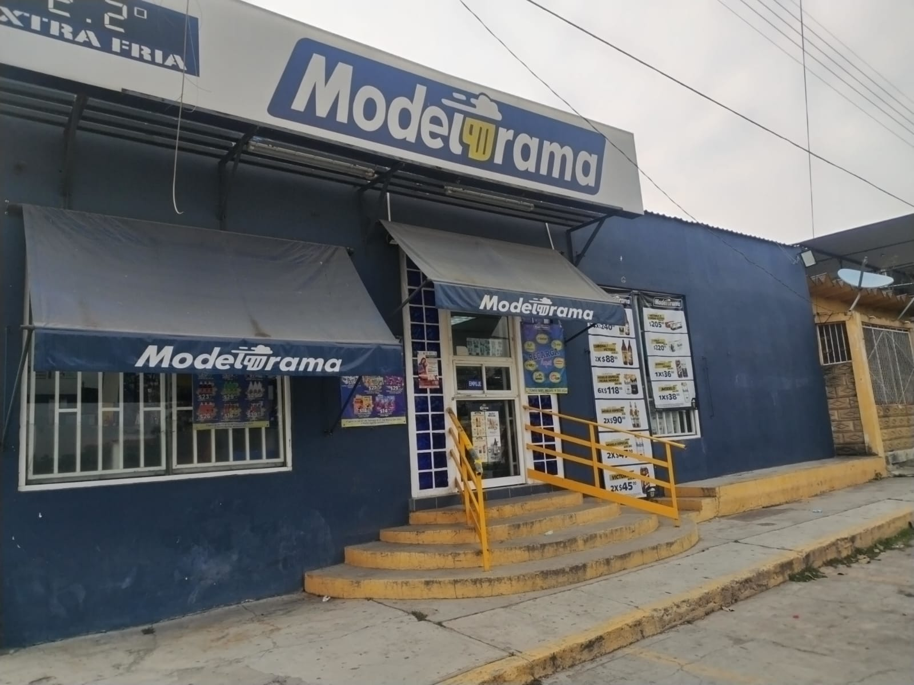
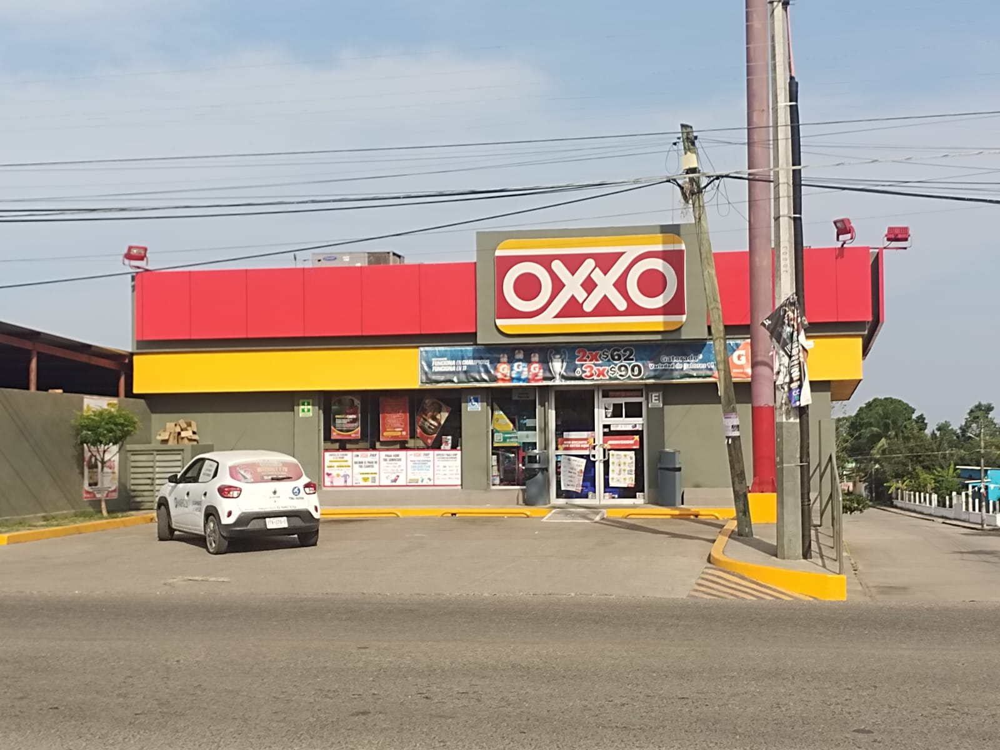
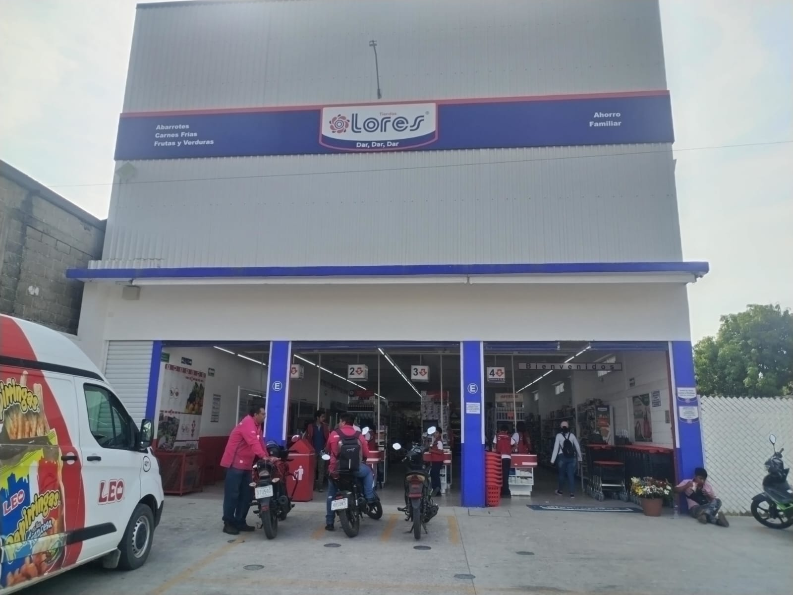
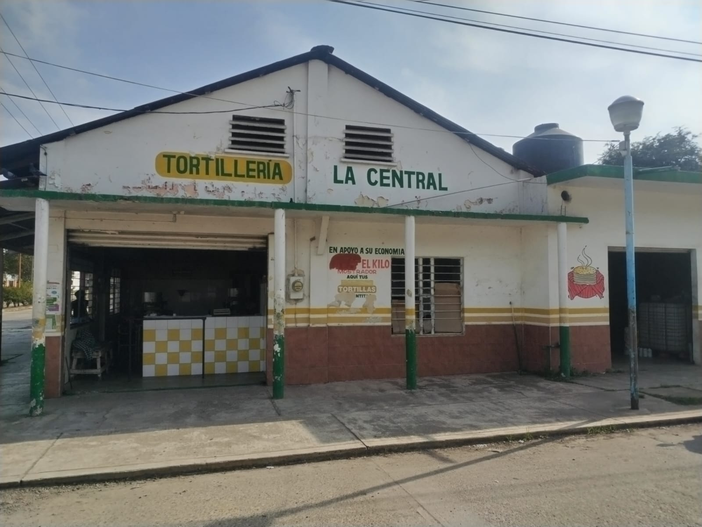

Es un pueblo pintoresco, alrededor de unos 4726 habitante, pertenece al Municipio de Cosamaloapan de Carpio, esta a 23 metros de altura y se ubica a 37.8 kilómetros, en dirección Noroeste, de la localidad de Cosamaloapan.
PARQUE BENITO JUAREZ
Es un parque de tamaño regular, en el, por las tardes juegan futbol, voleibol, practican danza y en ocasiones se hacen convivios. Buen ambiente, ideal para llevar a toda la familia. Se encuentra en el centro del pueblo. Y este es el que antes era panteón.
ESCUELA PRIMARIA SALVADOR DIAZ MIRÓN
Es una escuela de educacion basica, la cual esta muy bien preparada para formar y preparar a niños, cuenta con los seis años de educación básica, es una escuela con alrededor de 1000 metros cuadrados, pero muy bien respaldada por los maestros, los años de historia y la supervisión. Tambien era panteón hace mucho tiempo atras.
MODELORAMA
Este ya tiene bastante tiempo ahi, es como todo modelorama, muy accesible y rapido, en el encontraras: distiantas variedades de cervezas, licores, como también despensa básica para la casa: arroz, frijol, azucar, sal, refrescos y mucho más.

PAPELERIA Y CYBER COMAQ
Es un lugar seguro, muy económico, encuentras todo lo necesario para la escuela, trabajo o manualidad. Es uno de los comercios con más antiguedad dentro de la comunidad, presta una muy buena atención.

OXXO
Este apenas lleva poco tiempo dentro de la localidad, es al igual que el modelorama solo que los precios un poco mas elevados. Encontraras una gran variedad de cosas y esta a un costado de la carretera federal 145.

CENTRO COMERCIAL LORES
Este apenas lleva un par de meses ahi, es al igual que todos las tiendas Lores con precios accesibles y muy surtido, cuenta con alrededor de 590 metros cuadrados y presta una buena atención.

TORTILLERIA LA CENTRAL
Esta es la unica tortilleria que ha estado de década en década en la misma ubicación, la cual se encarga de surtir todos los comercios y alrededores de la localidad.

FARMACIA SIMILARES
Es una farmacia con precios muy accesibles y muy grande. Esta ubicada a un lado del OXXO y también es muy fundamental dentro de la localidad, ya que cuenta con médico.

IGLESIA "CRUZ DEL CAMINO"
Es una iglesia católica en la cual se hacen celebraciones y misas entre semana y domingos.

TIENDA "SAN CARLOS"
Es un local con 70 metros cuadrados, muy surtido con bajos costos y támbien con muy buen trato al cliente.